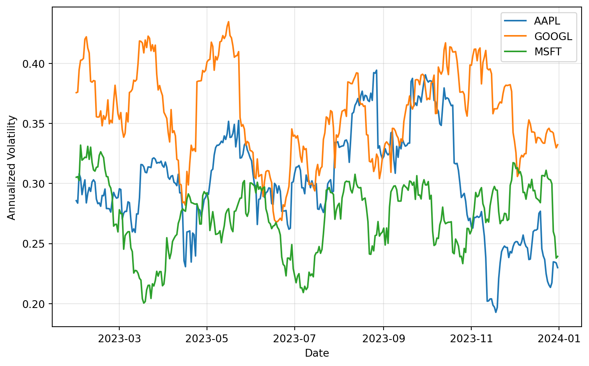

Research in empirical finance requires more than just running analyses and generating results. You need to communicate your findings clearly, ensure others can verify your work, and often revisit your analysis months or years later. This is where reproducible documents become essential.
A reproducible document combines three critical elements in a single file:
Narrative text that explains your research question, methodology, and interpretation
Code that performs the analysis
Results such as tables, figures, and statistical output
When you update your data or refine your methodology, the entire document updates automatically. No more copying and pasting regression tables from Stata to Word, or manually updating figure numbers when you add a new chart. No more wondering which version of the code produced which table in your paper.
Quarto is a modern, open-source scientific publishing system that makes creating reproducible documents straightforward. It works seamlessly with Python (and R, Julia, and Observable), produces beautiful output in multiple formats (HTML, PDF, Word), and is designed specifically for technical and scientific communication.
In this chapter, you’ll learn how to create professional research documents with Quarto. We’ll start with the basics of document structure, then explore how to integrate code, figures, and tables into your narrative. By the end, you’ll be able to produce publication-quality papers and reports where every number, table, and figure is generated directly from your analysis code.
NoteWhy Quarto over Jupyter Notebooks?
You may already be familiar with Jupyter notebooks, which are excellent for exploratory analysis and interactive computing. Quarto builds on this foundation but offers several advantages for research communication:
Better narrative flow: Quarto documents are written in plain text with markdown, making them easier to version control and collaborate on
Multiple output formats: One source file can generate HTML, PDF, Word documents, presentations, and more
Publication quality: Built-in support for citations, cross-references, equations, and academic formatting
Computational efficiency: Smart caching means long-running computations don’t need to re-run every time you fix a typo
Separation of concerns: You can focus on writing when writing, and on code when coding
That said, Jupyter notebooks remain invaluable for interactive exploration. Many researchers use notebooks for analysis development and Quarto for final communication.
19.1 A Note on LaTeX
Before diving into Quarto, it’s worth understanding where it fits in the landscape of academic writing tools. For decades, researchers in quantitative fields have used LaTeX (pronounced “LAY-tek” or “LAH-tek”) to produce publication-quality documents. LaTeX is a typesetting system that excels at handling mathematical notation, citations, and complex document structures—all things that word processors traditionally struggle with.
The good news is that you don’t need to learn LaTeX to use Quarto effectively. Quarto uses LaTeX as an intermediary when producing PDF output, but it hides most of the complexity behind a simpler Markdown-based syntax. You write in Markdown, and Quarto handles the conversion to LaTeX and then to PDF. This gives you the beautiful typography and equation rendering of LaTeX without the steep learning curve.
That said, understanding that LaTeX powers the PDF output helps explain some of Quarto’s behavior. When you see references to “LaTeX packages” or when you need fine-grained control over PDF formatting, you’re interacting with this underlying system. For most use cases, Quarto’s defaults produce journal-quality documents without any LaTeX knowledge required.
19.2 Beyond Manuscripts
While this chapter focuses primarily on research papers and reports, Quarto’s capabilities extend well beyond traditional manuscripts. The same Markdown-based workflow can produce:
Presentations: Create slides using Reveal.js (interactive HTML), PowerPoint, or Beamer (LaTeX-based PDF slides)
Websites and blogs: Build complete static sites with navigation, search, and multiple pages
Interactive dashboards: Combine data visualizations with user inputs for dynamic exploration
Books: Write multi-chapter documents with cross-references, indexes, and consistent styling (these course notes are built with Quarto)
This flexibility means that once you learn Quarto for research writing, you can apply the same skills to course materials, project documentation, or personal websites. The underlying syntax remains consistent across output formats, so transitioning between them requires minimal additional learning.
19.3 Pros and Cons of Quarto
Like any tool, Quarto involves trade-offs. Understanding these helps you decide when it’s the right choice.
Strengths:
Simpler than LaTeX: Markdown is far easier to read and write than LaTeX source code. Most formatting is intuitive (bold is **bold**, headers use #)
Reproducible by design: Code is embedded in the document, so results always match the analysis
Flexible output: One source file can generate PDF for journal submission, HTML for your website, and Word for collaborators who prefer it
Modern tooling: Integrates with VS Code, RStudio, and other development environments with syntax highlighting and live preview
Drawbacks:
PDF compilation can be slower: Because Quarto converts to LaTeX and then to PDF, rendering takes longer than pure LaTeX for complex documents
Deep LaTeX customization requires effort: While Quarto handles common formatting well, unusual requirements (custom journal templates, specialized packages) sometimes require understanding LaTeX
Dependency on execution environment: Your document’s reproducibility depends on maintaining the same Python environment over time
For most empirical research workflows, Quarto’s advantages substantially outweigh its limitations. The key is knowing when you might need to drop down to LaTeX for specialized formatting and when Quarto’s defaults are sufficient.
19.4 Prerequisites
This chapter assumes you have:
Python and Quarto installed (see the installation chapter)
Basic familiarity with Python and pandas
A text editor or IDE (VS Code works particularly well with Quarto)
You should be comfortable reading and writing basic Python code, but you don’t need advanced programming skills. We’ll explain all the Quarto-specific syntax as we go.
19.4.1 Installing a LaTeX distribution
To render PDF output, Quarto needs a LaTeX distribution. The simplest option is TinyTeX, a minimal distribution designed specifically for Quarto:
quarto install tinytex
TinyTeX automatically installs any LaTeX packages Quarto needs during rendering. This is the recommended approach for most users.
Alternatively, if you work with LaTeX outside of Quarto or need a full installation, you can install a complete distribution:
Linux: TeX Live (typically via your package manager)
These full distributions are larger but include every package you might need.
19.4.2 VS Code extension
If you use VS Code, install the Quarto extension for the best experience. It provides:
Syntax highlighting for .qmd files
Integrated preview with live updates
Code completion for YAML options
Run buttons for code chunks
The extension transforms VS Code into a powerful Quarto development environment.
19.5 Quarto Project Structure
19.5.1 Your first Quarto document
A Quarto document is a plain text file with a .qmd extension. Let’s create a simple example to understand the basic structure.
Create a file called analysis.qmd with the following content:
---title: "Stock Returns Analysis"author: "Your Name"date: todayformat: html---## IntroductionThis document analyzes daily stock returns for major tech companies.## Data Loading```{python}import pandas as pdimport numpy as np# Generate sample datanp.random.seed(42)dates = pd.date_range('2023-01-01', '2023-12-31', freq='D')returns = pd.DataFrame({'Date': dates,'AAPL': np.random.normal(0.001, 0.02, len(dates)),'GOOGL': np.random.normal(0.0008, 0.022, len(dates)),'MSFT': np.random.normal(0.0012, 0.018, len(dates))})print(f"Loaded {len(returns)} observations")
19.6 Summary Statistics
The average daily return for AAPL was {{{python}} f”{returns[‘AAPL’].mean():.4f}“}.
This simple document has three key components:
1. **YAML header** (between `---` markers): Metadata about the document
2. **Markdown sections**: Your narrative text with headings, paragraphs, lists, etc.
3. **Code chunks**: Python code that executes when you render the document
::: {.callout-tip}
## YAML header
The YAML (Yet Another Markup Language) header at the top of your document controls how Quarto processes and formats your output. Common options include:
- `title`, `author`, `date`: Document metadata
- `format`: Output format (html, pdf, docx, etc.)
- `execute`: Control code execution behavior
- `bibliography`: Citation file location
- `number-sections`: Automatically number sections
We'll explore these options in detail throughout this chapter.
:::
### Rendering your document
To generate output from your Quarto document, use the `quarto render` command:
```bash
quarto render analysis.qmd
This creates an HTML file (by default) in the same directory. Open analysis.html in your browser to see the result.
For a live preview that updates as you edit:
quarto preview analysis.qmd
This opens your browser and automatically refreshes whenever you save changes to the .qmd file.
19.6.1 Running Quarto with uv
If you use uv to manage your Python environment, you’ll want to ensure Quarto runs within that environment. This guarantees that Quarto uses the same packages and versions as your project:
uv run quarto render manuscript.qmd --to pdfuv run quarto preview manuscript.qmd
This approach ensures your document renders with the exact dependencies specified in your project, making the output truly reproducible.
TipIDE integration
Most modern IDEs provide Quarto support:
VS Code: Install the Quarto extension for syntax highlighting, preview, and rendering
RStudio: Built-in Quarto support with visual editor
PyCharm: Use the Quarto plugin
These tools make it easier to write and preview your documents without switching to the command line.
19.6.2 Document structure and organization
As your analysis grows, you’ll want to organize it into sections and subsections. Quarto uses standard markdown heading syntax:
For academic papers, a typical structure might be:
---title: "The Impact of Earnings Announcements on Stock Volatility"author: "Your Name"format: pdf---## AbstractBrief summary of your research...## IntroductionResearch question and motivation...## Literature ReviewPrevious work on this topic...## Data and Methodology### Data sourcesDescription of your data...### Empirical strategyYour econometric approach...## Results### Descriptive statisticsSummary statistics tables...### Main findingsRegression results and interpretation...### Robustness checksAlternative specifications...## ConclusionSummary and implications...## References::: {#refs}:::
NoteSectioning in PDF vs. HTML
When rendering to PDF, Quarto maps markdown headings to LaTeX sectioning commands:
# becomes \chapter (in book format) or \section
## becomes \section or \subsection
### becomes \subsection or \subsubsection
For HTML output, headings become <h1>, <h2>, <h3>, etc.
You can control numbering with the number-sections: true option in the YAML header.
19.6.3 Multi-file projects
For larger projects like a thesis or a working paper with multiple analyses, you can organize content across multiple files:
This approach keeps individual files manageable while maintaining a cohesive document. You can render the entire project with quarto render or individual chapters with quarto render 02-data.qmd.
19.7 Code Execution and Output
The real power of Quarto lies in how it integrates code execution into your document. Let’s explore how to control what code runs, what gets displayed, and how results appear in your output.
19.7.1 Code chunks
Code chunks are fenced blocks of Python code that Quarto executes when rendering your document. The basic syntax is:
```{python}# Your Python code hereimport pandas as pddata = pd.read_csv('data.csv')print(data.head())```
When rendered, this shows both your code and its output. Here’s a complete example:
You can control code chunk behavior using special comments or chunk options. The most common options are:
echo: Show the code in output (default: true)
eval: Execute the code (default: true)
output: Show code output (default: true)
warning: Show warnings (default: true)
error: Continue rendering if code errors (default: false)
Here’s how to use them:
```{python}#| echo: false#| warning: false# This code runs but doesn't appear in the output# Warnings are suppressedimport pandas as pddata = pd.read_csv('data.csv')```
Common combinations:
Show code only, don’t run it:
```{python}#| eval: false# This demonstrates syntax but doesn't executemodel = LinearRegression()model.fit(X, y)```
Run code silently, show results only:
```{python}#| echo: false# Setup code that readers don't need to seeimport matplotlib.pyplot as pltimport seaborn as snssns.set_style('whitegrid')```
You can set default chunk options for the entire document in the YAML header:
---title:"My Analysis"execute:echo:false # Hide all code by defaultwarning:false # Suppress all warningsmessage:false # Suppress messages---
Individual chunks can override these defaults by specifying their own options.
19.7.3 Inline code
For incorporating single values or calculations directly into your prose, use inline code expressions:
The sample includes {{{python}} len(data)} observations spanning{{{python}} data['Date'].min().strftime('%B %Y')} to{{{python}} data['Date'].max().strftime('%B %Y')}.
This renders as: “The sample includes 1,234 observations spanning January 2020 to December 2023.”
Inline code is perfect for:
Reporting sample sizes
Citing specific coefficients or statistics
Including computed dates or ranges
Any number that should update automatically when data changes
WarningInline code must be self-contained
Inline code expressions can only reference variables already defined in previous code chunks. They’re evaluated in the same Python session, but you can’t define complex logic inline. For anything beyond simple variable references or method calls, use a regular code chunk first:
If you have existing analysis in Jupyter notebooks, Quarto can work with them directly. You can render a .ipynb file to PDF, HTML, or any other format without converting it first:
quarto render analysis.ipynb --to pdfquarto render analysis.ipynb --to html
This makes it easy to produce polished output from notebook-based analysis. Quarto respects cell metadata in notebooks, so you can add chunk options like #| echo: false in notebook code cells.
For more control, you can convert a notebook to a Quarto document:
quarto convert notebook.ipynb
This creates a .qmd file that you can edit with full access to Quarto’s features.
19.7.5 Caching and freeze
Research computations can be time-consuming. If your analysis takes 30 minutes to run, you don’t want to wait that long every time you fix a typo. Quarto offers two solutions: caching and freezing.
Freeze stores the results of code execution and reuses them unless the code changes:
---title:"My Analysis"execute:freeze: auto # Only re-run if code changes---
With freeze: auto, Quarto:
Runs all code chunks the first time you render
Stores results in a _freeze directory
On subsequent renders, reuses stored results unless code changed
Detects code changes and re-runs only affected chunks
To force a complete re-execution:
quarto render --execute-all
Cache provides finer control at the chunk level:
```{python}#| cache: true# This expensive computation is cachedresults = run_monte_carlo_simulation(n_simulations=100000)```
TipWhen to use freeze vs. cache
Freeze (freeze: auto): Best for most research documents. Simple, automatic, and works at the document level.
Cache (cache: true): Use for specific expensive chunks within a document that otherwise runs quickly.
Neither (freeze: false): Only for documents with fast computations or when you need to ensure results are always fresh.
For empirical research papers, freeze: auto is typically the best choice. It ensures reproducibility while keeping rendering fast during the writing process.
19.8 Integrating Figures and Tables
Research documents live and die by their figures and tables. Quarto makes it easy to create, format, and reference high-quality visual content.
19.8.1 Creating figures
Figures in Quarto typically come from matplotlib, seaborn, or other plotting libraries. Here’s a complete example showing best practices:
import matplotlib.pyplot as pltimport pandas as pdimport numpy as np# Generate sample datanp.random.seed(42)dates = pd.date_range('2023-01-01', '2023-12-31', freq='D')returns = pd.DataFrame({'Date': dates,'AAPL': np.random.normal(0.001, 0.02, len(dates)),'GOOGL': np.random.normal(0.0008, 0.022, len(dates)),'MSFT': np.random.normal(0.0012, 0.018, len(dates))})# Calculate rolling volatilityvolatility = returns.set_index('Date')[['AAPL', 'GOOGL', 'MSFT']].rolling(30).std() * np.sqrt(252)# Create plotfig, ax = plt.subplots(figsize=(8, 5))for col in volatility.columns: ax.plot(volatility.index, volatility[col], label=col, linewidth=1.5)ax.set_xlabel('Date')ax.set_ylabel('Annualized Volatility')ax.legend()ax.grid(True, alpha=0.3)plt.tight_layout()plt.show()

Figure 19.2: 30-Day Rolling Volatility for Tech Stocks
Notice the chunk options:
label: fig-volatility: Creates a reference ID for citing this figure
fig-cap: Adds a caption that appears below the figure
fig-width and fig-height: Control size in inches
warning: false: Suppresses any warnings from the plotting code
You can reference this figure in your text using @fig-volatility, which automatically numbers it and creates a clickable link.
TipPublication-quality figure tips
For figures that might appear in publications:
Size appropriately: Most journals want figures around 6-8 inches wide
Use vector formats: In PDF output, matplotlib figures are automatically vector (scalable)
Choose readable fonts: Increase font sizes for small figures
Simplify: Remove chart junk, use clear labels, and ensure sufficient contrast
Consistent styling: Set a style once at the document start
Example setup chunk:
```{python}#| echo: falseimport matplotlib.pyplot as pltimport seaborn as sns# Set consistent style for all figuressns.set_style('whitegrid')plt.rcParams['figure.dpi'] =300plt.rcParams['font.size'] =10plt.rcParams['axes.labelsize'] =11plt.rcParams['axes.titlesize'] =12```
19.8.2 Creating tables
Tables in empirical finance typically show summary statistics, regression results, or data samples. Quarto handles several approaches:
1. Simple DataFrame display
The simplest approach is to just display a pandas DataFrame:
Like figures, tables with label: tbl-name and tbl-cap can be cross-referenced in text using @tbl-name. Quarto automatically numbers tables and creates hyperlinks in HTML and PDF output.
For example, you might write: “Table Table 19.1 shows that MSFT has the highest Sharpe ratio among the three stocks.”
19.8.3 Cross-referencing
Professional documents need consistent numbering and easy cross-references. Quarto handles this automatically:
Figures:
See @fig-volatility for the time series of rolling volatility.
Tables:
Summary statistics are presented in @tbl-summary.
Sections:
## Data Sources {#sec-data}Our data sources are described in @sec-data.
Equations:
The CAPM equation is:$$E[R_i] = R_f + \beta_i(E[R_m] - R_f)$$ {#eq-capm}As shown in @eq-capm, expected returns depend on systematic risk.
Quarto automatically:
Numbers all figures, tables, equations, and sections
Updates numbers when you add or remove items
Creates hyperlinks for easy navigation
Formats references according to output type (HTML vs. PDF)
TipPrefix conventions
Quarto uses prefixes to determine reference types:
fig-*: Figures
tbl-*: Tables
sec-*: Sections
eq-*: Equations
lst-*: Code listings
thm-*: Theorems
Following these conventions ensures proper formatting and numbering.
19.8.4 Figure and table layout
For professional documents, you often need precise control over layout:
```{python}#| label: fig-important#| fig-cap: "Critical results"#| fig-pos: 'H' # Force exact position (requires float package in LaTeX)plt.plot(data)plt.show()```
19.9 LaTeX Configuration
When you need fine-grained control over PDF output, Quarto exposes many LaTeX options through the YAML header. This section covers the most useful configurations for academic writing.
19.9.1 PDF engine selection
By default, Quarto uses LuaLaTeX to compile PDFs. You can specify an alternative:
format:pdf:pdf-engine: xelatex # or pdflatex, lualatex
LuaLaTeX (the default) handles Unicode well and supports modern font features. XeLaTeX is another good choice for Unicode and custom fonts. The older pdflatex is faster but has limited Unicode support.
19.9.2 Document classes
The documentclass option controls the overall document structure:
format:pdf:documentclass: article # Standard LaTeX classes
Standard classes include article, report, and book. For better typography, consider the KOMA-Script classes:
This approach lets you apply consistent styling across multiple documents by sharing a common preamble.
19.9.4 Raw LaTeX in documents
You can include LaTeX commands directly in your Quarto document when needed:
Inline LaTeX:
The result is significant at the \( p < 0.01 \) level.
Display equations:
$$\hat{\beta} = (X'X)^{-1}X'y$$
Raw LaTeX blocks:
```{=latex}\begin{theorem}Under standard assumptions, $\hat{\beta}$ is consistent.\end{theorem}
Use raw LaTeX sparingly—it only appears in PDF output and breaks the multi-format capability.
### Conditional content for different formats
Sometimes you need different content for PDF versus HTML. Use conditional blocks:
```markdown
::: {.content-visible when-format="html"}
Click the button below to download the data.
:::
::: {.content-visible when-format="pdf"}
Data available at: https://example.com/data
:::
This is useful for:
Interactive elements that only work in HTML
Print-specific instructions for PDF readers
Format-appropriate download links
19.10 PDF and HTML Output
One of Quarto’s greatest strengths is generating multiple output formats from a single source. Let’s explore how to create polished PDF and HTML documents suitable for academic publication.
19.10.1 PDF output basics
To generate PDF output, specify it in the YAML header:
---title:"Earnings Announcements and Volatility"author:"Your Name"format: pdf---
Then render with:
quarto render document.qmd --to pdf
Quarto uses LaTeX behind the scenes, but you don’t need to know LaTeX to create beautiful PDFs. Quarto handles the conversion automatically.
19.10.2 PDF formatting options
Customize PDF appearance with format options:
---title:"My Research Paper"author:"Your Name"date: todayformat:pdf:documentclass: article # article, report, or bookfontsize: 11pt # 10pt, 11pt, or 12ptgeometry:- margin=1in # Page marginsnumber-sections:true # Numbered sectionstoc:true # Table of contentstoc-depth:2 # How many levels to includecolorlinks:true # Colored hyperlinksbiblio-style: apalike # Citation style---
Common document classes:
article: Standard papers (default)
scrartcl: KOMA-Script article (better typography)
report: Longer documents with chapters
book: Books with parts and chapters
Page layout:
format:pdf:geometry:- top=1in- bottom=1in- left=1.25in- right=1.25inpapersize: letter # or a4
Typography:
format:pdf:mainfont:"Times New Roman" # Main text fontsansfont:"Arial" # Sans-serif fontmonofont:"Courier New" # Code fontfontsize: 12ptlinestretch:1.5 # Line spacing (1.5 = 1.5-spaced)
NoteWorking paper vs. journal submission
For working papers, you control the formatting completely. For journal submissions, most journals provide LaTeX templates or Word templates. You can:
Use Quarto with journal formatting: Some journals have Quarto templates
Export to LaTeX: Render with quarto render --to latex and edit the .tex file
Export to Word: Use format: docx and apply journal styles in Word
Many researchers write in Quarto for working papers and early drafts, then convert to journal format for final submission.
19.10.3 HTML output basics
HTML output is ideal for online sharing, course materials, and interactive documents:
---title:"My Analysis"format: html---
HTML output automatically includes:
Interactive table of contents
Code folding (readers can show/hide code)
Responsive design (works on mobile devices)
Fast navigation and search
19.10.4 HTML themes and styling
Quarto includes several built-in themes:
format:html:theme: cosmo # Options: default, cosmo, flatly, journal, etc.
Popular themes for academic content:
cosmo: Clean, modern
flatly: Flat design, very readable
journal: Newspaper-style
litera: Classic, professional
sandstone: Warm, welcoming
Customize further:
format:html:theme: cosmotoc:true # Table of contentstoc-depth:3 # Levels to includetoc-location: left # left, right, or bodynumber-sections:truenumber-depth:3code-fold:true # Collapsible code blockscode-tools:true # Show/hide all code buttoncode-link:true # Hyperlink function namesdf-print: paged # Paginate large DataFrames
Sometimes you need different content for different outputs. Use conditional blocks:
::: {.content-visible when-format="html"}This paragraph only appears in HTML output.You can include interactive widgets here.:::::: {.content-visible when-format="pdf"}This paragraph only appears in PDF output.You might include a note about the HTML version.:::
This is useful for:
Adding interactive elements to HTML but not PDF
Including print-specific formatting notes
Providing format-appropriate download links
19.10.6 Citations and references
Academic writing requires proper citations. Quarto integrates with BibTeX and other reference managers:
1. Create a bibliography file (references.bib):
@article{fama1993,title={Common risk factors in the returns on stocks and bonds},author={Fama, Eugene F and French, Kenneth R},journal={Journal of Financial Economics},volume={33},number={1},pages={3--56},year={1993}}@book{campbell1997,title={The Econometrics of Financial Markets},author={Campbell, John Y and Lo, Andrew W and MacKinlay, A Craig},year={1997},publisher={Princeton University Press}}
The Fama-French three-factor model [@fama1993] extends the CAPM by includingsize and value factors. For a comprehensive treatment of financial econometrics,see @campbell1997.
This renders as:
The Fama-French three-factor model (Fama and French, 1993) extends the CAPM by including size and value factors. For a comprehensive treatment of financial econometrics, see Campbell, Lo, and MacKinlay (1997).
4. Include a references section:
## References::: {#refs}:::
Quarto automatically generates a formatted reference list here.
Citation styles:
Change citation format with CSL (Citation Style Language):
---bibliography: references.bibcsl: american-economic-review.csl # Download from Zotero Style Repository---
Summations: $\sum_{i=1}^{n} x_i$ renders as Σ_{i=1}^n x_i
Expectations: $E[X]$ or $\mathbb{E}[X]$
19.11 Collaborative Commenting with quarto-comments
When writing research documents collaboratively, you often need to leave notes, questions, or todos for yourself or co-authors. The quarto-comments extension provides shortcodes for inline comments that appear in your output (useful during drafting) but can be hidden for final submission.
19.11.1 Installing the extension
Install the extension in your Quarto project:
quarto add vgreg/quarto-comments
This adds the extension to your project’s _extensions directory.
19.11.2 Using comment shortcodes
The extension provides three shortcode types:
Todos for tasks that need attention:
We need to add robustness checks here. {{< todo >}}The data section should cite the original source. {{< todo author="AB" >}}
Notes for explanatory comments:
This result is surprisingly strong. {{< note >}}Consider alternative specifications. {{< note author="CD" >}}
Questions for items needing discussion:
Should we include financial firms? {{< question >}}Is this the right sample period? {{< question author="EF" >}}
19.11.3 Configuration
Configure the extension in your _quarto.yml or document YAML:
comments:show:true # Set to false for final submissionauthors:AB:name:"Alice Brown"color:"#e41a1c"CD:name:"Chris Davis"color:"#377eb8"
When you’re ready to submit, simply set show: false to hide all comments from the output without deleting them from your source file.
TipHiding comments for submission
A common workflow is to keep show: true during drafting and collaboration, then change to show: false when generating the final PDF for submission. The comments remain in your source document for future reference but don’t appear in the output.
19.12 Best Practices for Research Documents
As you create research documents with Quarto, keep these practices in mind:
19.12.1 1. Separate data processing from presentation
Structure your workflow with distinct stages:
```{python}#| echo: false#| output: false# Data loading and cleaning (run silently)import pandas as pddata = pd.read_csv('raw_data.csv')data = data.dropna()data = data[data['date'] >='2020-01-01']
```{python}#| echo: false# Analysis and results (show output)summary_stats = data.describe()summary_stats```
This keeps your document clean and focused on results rather than data munging details.
### 2. Use meaningful chunk labels
Good labels make documents maintainable:
```markdown
#| label: fig-event-study
#| label: tbl-regression-main
#| label: sec-robustness-checks
Include a setup section explaining data sources and key assumptions:
## DataWe obtain daily stock returns from CRSP for all NYSE, AMEX, and NASDAQ stocksfrom January 1990 to December 2023. We require firms to have at least 12 monthsof return data and exclude financial firms (SIC codes 6000-6999).```{python}#| echo: false# Data filtersmin_months =12start_date ='1990-01-01'end_date ='2023-12-31'exclude_sic =range(6000, 7000)
### 4. Use freeze for long-running documents
For computationally intensive research:
```yaml
---
title: "Monte Carlo Analysis"
execute:
freeze: auto
---
This lets you edit text freely without re-running expensive simulations.
19.12.3 5. Version control with Git
Quarto documents are plain text, making them perfect for Git:
Quarto bridges the gap between LaTeX’s typesetting power and Jupyter’s reproducibility, letting you keep your analysis and writing in one place. Whether you’re writing a working paper, preparing course materials, or building a research website, Quarto makes the entire process more reproducible, collaborative, and efficient.
Knaflic, Cole Nussbaumer. 2015. Storytelling with Data: A Data
Visualization Guide for Business Professionals. Wiley.
Rougier, Nicolas P. 2021. Scientific Visualization: Python +
Matplotlib.
Tufte, Edward R. 2001. The Visual Display of Quantitative
Information. 2nd ed. Graphics Press.
Wilke, Claus O. 2019. Fundamentals of Data Visualization: A Primer
on Making Informative and Compelling Figures. 1st ed. Sebastopol,
CA: O’Reilly Media.